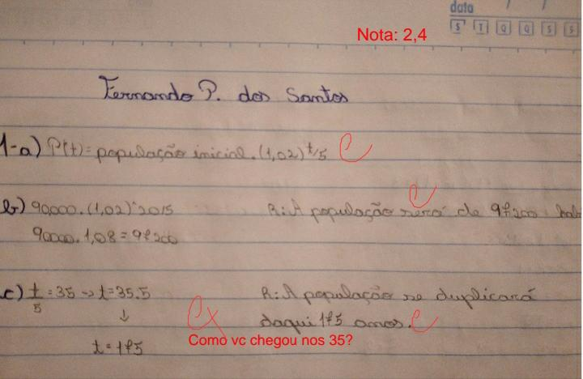

A função exponencial é aquela em que a variável está no expoente, e a base é sempre maior do que 0 e diferente de 1, ela normalmente é dada da forma: f(x) = 4x e é realizada em gráficos.
A função logarítmica é definida como f (x) = loga x com a real, positivo e a ≠ 1. A função inversa da função logarítmica é a função exponencial.O logaritmo de um número é definido como o expoente ao qual se deve elevar a base a para obter o número x.
Matemática financeira é a área da matemática que estuda como se comporta o valor do dinheiro no decorrer do tempo, ela possui aplicações financeiras básicas como empréstimos, renegociação de dívidas, ou mesmo, calcular o valor de desconto em um produto.
Ela possui 5 conceitos básicos:
Capital:epresenta o valor do dinheiro no momento atual.
Montante:Corresponde ao valor futuro, é o capital mais os juros acrescidos ao valor.
Juros:Representam os valores obtidos pela remuneração de um capital.
Taxa de Juros:É o percentual do custo ou remuneração paga pelo uso do dinheiro, ela sempre está acossiada a um prazo.
Porcentagem:A porcentagem (%) é uma determinada parte de cada 100 partes, podemos utilizar ela para aumentar ou diminuir o valor de um desconto.
Nesse segundo trabalho eu continuei tendo dificuldades, mesmo frequentando o horário de atendimento para tirar as minhas dúvidas. Porém o que me fez ficar com a nota baixa foi a minha falta de vontade de realizar a atividade que junto com a falta de atenção me fizeram ficar com um nota ruim.
Com esse trabalho eu também percebi que eu tenho facilidade em entender a matéria porém quando vou desenvolver ela eu possuo uma grande dificuldade e isso é um dos pontos que eu vou melhorar na matemática
